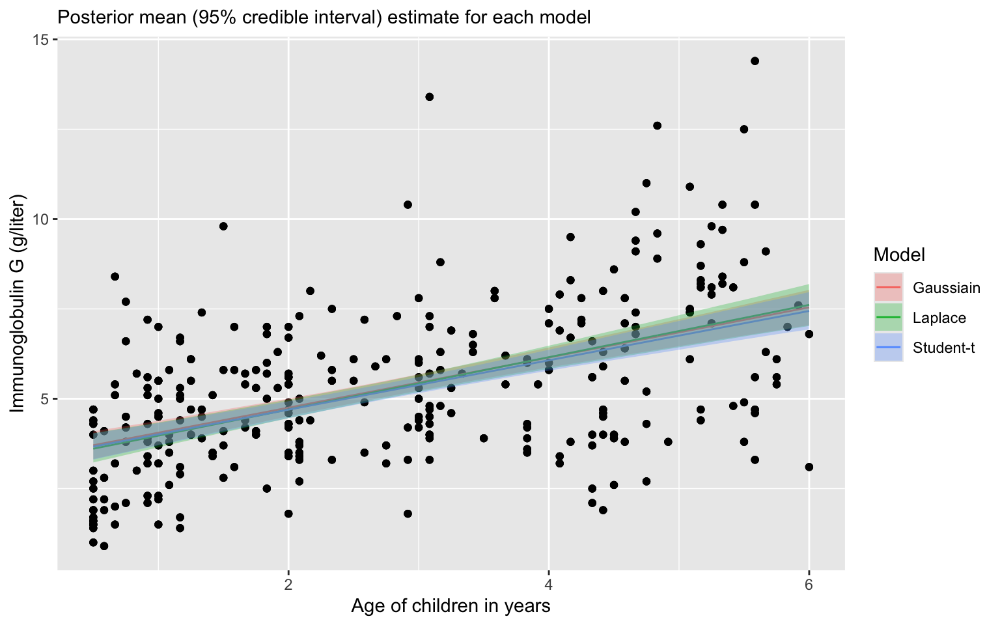

IgG Age
1 1.5 0.5
2 2.7 0.5
3 1.9 0.5
4 4.0 0.5
5 1.9 0.5
6 4.4 0.5Robust Regression
Prof. Sam Berchuck
Feb 11, 2025
Review of last lecture
- On Thursday, we learned about approaches for nonlinear regression.
A motivating research question
In today’s lecture, we will look at data on serum concentration (grams per litre) of immunoglobulin-G (IgG) in 298 children aged from 6 months to 6 years.
- A detailed discussion of this data set may be found in Isaacs et al. (1983) and Royston and Altman (1994).
For an example patient, we define \(Y_i\) as the serum concentration value and \(X_i\) as a child’s age, given in years.
Pulling the data
Visualizing IgG data


Disease progression
- OLS can be written as follows for \(i = 1,\ldots,n\),
\[Y_i = \beta_0 + \beta_1 X_i + \epsilon_i,\quad \epsilon_i \sim N(0,\sigma^2).\]
\(\beta_1\) represent the the change in IgG serum concentration a one year increase in age.
Often the following hypothesis is tested: \[H_0: \beta_1=0,H_1: \beta_1 < 0.\]
OLS regression assumptions
\[\begin{aligned} Y_i &= \beta_0 + \beta_1 X_i + \epsilon_i,\quad \epsilon_i \sim N(0,\sigma^2)\\ &= \mu_i + \epsilon_i. \end{aligned}\]
Assumptions:
\(Y_i\) are independent observations (independence).
\(Y_i\) is linearly related to \(X_i\) (linearity).
\(\epsilon_i = Y_i - \mu_i\) is normally distributed (normality).
\(\epsilon_i\) has constant variance across \(X_i\) (homoskedasticity).
Assessing assumptions


Robust regression
Today we will learn about regression techniques that are robust to the assumptions of linear regression.
We will introduce the idea of robust regression by exploring ways to generalize the homoskedastic variance assumption in linear regression.
We will touch on heteroskedasticity, heavy-tailed distributions, and median regression (more generally quantile regression).
Heteroskedasticity
Heteroskedasticity is the violation of the assumption of constant variance.
How can we handle this?
In OLS, there are approaches like heteroskedastic consistent errors, but this is not a generative model.
In the Bayesian framework, we generally like to write down generative models.
Weighted regression
A common case is weighted regression, where each \(Y_i\) represents the mean of \(n_i\) observations. Then the scale of each observation is, \[\tau_i^2 = \sigma^2/n_i,\] where \(\sigma^2\) is a global scale parameter.
Alternatively, suppose each observation represents the sum of each \(n_i\) observations. Then the scale of each observation is, \[\tau_i^2 = n_i \sigma^2.\]
Modeling the scale with covariates
The scale can also be modeled with covariates.
It is common to model the log-transformation of the scale or variance to transform it to \(\mathbb{R}\),
\[\log \tau_i^2 = \mathbf{z}_i \boldsymbol{\gamma},\]
where \(\mathbf{z}_i = (z_{i1},\ldots,z_{ip})\) are a \(p\)-dimensional vector of covariates and \(\boldsymbol{\gamma}\) are parameters that regress the covariates onto the log variance.
Other options include: \(\log \tau_i^2 = \mathbf{z}_i \boldsymbol{\gamma} + \nu_i,\quad \nu_i \sim N(0, \sigma^2)\)
Other options include: \(\log \tau_i^2 = f(\mu_i)\)
Any plausible generative model can be specified!
Modeling the scale with covariates
Heteroskedastic variance
We can write the regression model using a observation specific variance, \[Y_i = \mathbf{x}_i \boldsymbol{\beta} + \epsilon_i, \quad \epsilon_i \stackrel{ind}{\sim} N(0,\tau_i^2).\]
One way of writing the variance is: \(\tau_i^2 = \sigma^2 \lambda_i\).
\(\sigma^2\) is a global scale parameter.
\(\lambda_i\) is an observation specific scale parameter.
In the Bayesian framework, we must place a prior on \(\lambda_i\).
Bayesian prior to induce structure
Suppse we would like \(\sum_{i=1}^n \lambda_i = 1\), \(\lambda_i >0\).
We could specify the following,
\[\boldsymbol{\lambda} \sim \text{Dirichlet}(\boldsymbol{\alpha}),\]
where \(\boldsymbol{\lambda} = (\lambda_1,\ldots,\lambda_n)\) and \(\boldsymbol{\alpha} = (\alpha_1,\ldots,\alpha_n)\).
The prior mean is \(\mathbb{E}[\lambda_i] = \alpha_i / \alpha_0\), where \(\alpha_0 = \sum_{i=1}^n \alpha_i.\)
Typically, \(\alpha_i = 1 \forall i\).
Dirchlet prior in Stan
data {
int<lower = 1> n;
int<lower = 1> p;
vector[n] Y;
matrix[n, p] X;
vector<lower = 0>[n] alpha;
}
parameters {
vector[p] beta;
real<lower = 0> sigma;
simplex[n] lambda;
}
transformed parameters {
vector[n] tau = sigma * sqrt(lambda);
}
model {
target += normal_lpdf(Y | X * beta, tau);
target += dirichlet_lpdf(lambda | alpha);
}A prior to induce a heavy-tail
- A common prior for \(\lambda_i\) is as follows:
\[\lambda_i \stackrel{iid}{\sim} \text{Inverse-Gamma}\left(\frac{\nu}{2},\frac{\nu}{2}\right).\]
- Under this prior, the marginal likelihood for \(Y_i\) is equivalent to a Student-t distribution,
\[Y_i = \mathbf{x}_i \boldsymbol{\beta} + \epsilon_i, \quad \epsilon_i \sim t_{\nu}\left(0, \sigma\right).\]
Understanding the equivalence
- Heteroskedastic variances assumption is equivalent to assuming a heavy-tailed distribution.
\[Y_i = \mathbf{x}_i \boldsymbol{\beta} + \epsilon_i, \quad \epsilon_i \sim t_{\nu}\left(0, \sigma\right).\]
\[\iff\]
\[\begin{aligned} Y_i &= \mathbf{x}_i \boldsymbol{\beta} + \epsilon_i, \quad \epsilon_i \stackrel{ind}{\sim} N\left(0,\sigma^2 \lambda_i\right)\\ \lambda_i &\stackrel{iid}{\sim} \text{Inverse-Gamma}\left(\frac{\nu}{2},\frac{\nu}{2}\right) \end{aligned}\]
- Note that since the number of \(\lambda_i\) parameters is equal to the number of observations, this model will not have a proper posterior distribution without a proper prior distribution.
Understanding the equivalence
\[\begin{aligned} f(Y_i) &= \int_0^{\infty} f(Y_i , \lambda_i) d\lambda_i\\ &= \int_0^{\infty} f(Y_i | \lambda_i) f(\lambda_i) d\lambda_i\\ &= \int_0^{\infty} N(Y_i ; \mu_i, \sigma^2 \lambda_i) \text{Inverse-Gamma}\left(\lambda_i ; \frac{\nu}{2},\frac{\nu}{2}\right) d\lambda_i\\ &= t_{\nu}\left(\mu_i,\sigma\right). \end{aligned}\]
- The marginal likelihood can be viewed as a mixture of a Gaussian likelihood with an Inverse-Gamma scale parameter.
Understanding the equivalence
\[\begin{aligned} T_i &= \frac{Z_i}{\sqrt{\frac{W_i}{\nu}}},\quad Z_i \stackrel{iid}{\sim} N(0,1), W_i \stackrel{iid}{\sim}\chi^2_{\nu}\\ &= \frac{Z_i}{\sqrt{\frac{1}{\nu V_i}}},\quad V_i \stackrel{iid}{\sim} \text{Inv-}\chi^2_{\nu}\\ &= \sqrt{\nu V_i} Z_i,\quad \lambda_i = \nu V_i\\ &= \sqrt{\lambda_i} Z_i, \quad \lambda_i \stackrel{iid}{\sim} \text{Inverse-Gamma}\left(\frac{\nu}{2},\frac{\nu}{2}\right)\\ &\sim t_{\nu} \end{aligned}\]
- We then have: \(Y_i = \mu_i + \sigma T_i \sim t_{\nu}(\mu_i, \sigma).\)
Student-t in Stan
Student-t in Stan: mixture
data {
int<lower = 1> n;
int<lower = 1> p;
vector[n] Y;
matrix[n, p] X;
}
parameters {
vector[p] beta;
real<lower = 0> sigma;
vector[n] lambda;
}
transformed parameters {
vector[n] tau = sigma * sqrt(lambda);
}
model {
target += normal_lpdf(Y | X * beta, tau);
target += inv_gamma_lpdf(lambda | 0.5 * nu, 0.5 * nu);
}Why heavy-tailed distributions?
Replacing the normal distribution with a distribution with heavy-tails (e.g., Student-t, Laplace) is a common approach to robust regression.
Robust regression refers to regression methods which are less sensitive to outliers or small sample sizes.
Linear regression, including Bayesian regression with normally distributed errors is sensitive to outliers, because the normal distribution has narrow tail probabilities.
Our heteroskedastic model that we just explored is only one example of a robust regression model.
Vizualizing heavy tail distributions

Vizualizing heavy tail distributions

Another example of robust regression
Let’s revisit our general heteroskedastic regression, \[Y_i = \mathbf{x}_i \boldsymbol{\beta} + \epsilon_i, \quad \epsilon_i \stackrel{ind}{\sim} N(0,\sigma^2 \lambda_i).\]
We can induce another form of robust regression using the following prior for \(\lambda_i\), \(\lambda_i \sim \text{Exponential}(1/2)\).
Under this prior, the induced marginal model is, \[Y_i = \mathbf{x}_i\boldsymbol{\beta} + \epsilon_i,\quad \epsilon_i \stackrel{ind}{\sim} \text{Laplace}(\mu, \sigma).\]
\(f(\epsilon_i | \mu, \sigma) = \frac{1}{2\sigma} \exp\left\{-\frac{|\epsilon_i - \mu|}{\sigma}\right\}\)
Median regression using Laplace
Least absolute deviation (LAD) regression minimizes the following objective function,
\[\hat{\boldsymbol{\beta}}_{\text{LAD}} = \arg \min_{\boldsymbol{\beta}} \sum_{i=1}^n |Y_i - \mathbf{x}_i\boldsymbol{\beta}|.\]
The Bayesian analog is the Laplace distribution,
\(f(\mathbf{Y} | \boldsymbol{\beta}, \sigma) = \left(\frac{1}{2\sigma}\right)^n \exp\left\{-\sum_{i=1}^n\frac{|Y_i - \mathbf{x}_i \boldsymbol{\beta}|}{\sigma}\right\}.\)
Median regression using Laplace
The Laplace distribution is analogous to least absolute deviations because the kernel of the distribution is \(|x−\mu|\), so minimizing the likelihood will also minimize the least absolute distances.
Laplace distribution is also known as the double-exponential distribution (symmetric exponential distributions around \(\mu\) with scale \(\sigma\)).
Thus, a linear regression with Laplace errors is analogous to a median regression,
Why is median regression considered more robust than regression of the mean?
Laplace regression in Stan
Laplace regression in Stan: mixture
data {
int<lower = 1> n;
int<lower = 1> p;
vector[n] Y;
matrix[n, p] X;
}
parameters {
vector[p] beta;
real<lower = 0> sigma;
vector[n] lambda;
}
transformed parameters {
vector[n] tau = sigma * sqrt(lambda);
}
model {
target += normal_lpdf(Y | X * beta, tau);
target += exponential_lpdf(lambda | 0.5);
}Asymmetric Laplace distribution
A random variable, \(Y \sim ALD_p(\mu,\sigma)\) is said to follow an asymmetric Laplace distribution (ALD) if the pdf is given by,
\[f(Y) = \frac{p(1-p)}{\sigma} \exp \left\{-\rho_p\left(\frac{Y - \mu}{\sigma}\right)\right\},\]
where \(p \in (0,1)\) is the percentile and \[\rho_p(x) = x\left(p - 1(u < 0)\right) = \frac{|x| + (2p - 1)x}{2}.\]
- When \(p = 0.5\) it reduces to a regular Laplace distribution.
General quantile regression
functions {
real asym_laplace_lpdf(real y, real mu, real sigma, real tau) {
return log(tau) + log1m(tau)
- log(sigma)
- 2 * ((y < mu) ? (1 - tau) * (mu - y) : tau * (y - mu)) / sigma;
}
}
data {
int<lower = 1> n;
int<lower = 1> p;
vector[n] Y;
matrix[n, p] X;
real<lower = 0, upper = 1> tau;
}
parameters {
vector[p] beta;
real<lower = 0> sigma;
}
model {
for (i in 1:n) target += asym_laplace_lpdf(Y[i] | X[i, ] * beta, sigma, tau);
}Quantile regression

Posterior of \(\beta_1\)
| quantile | mean | lower | upper |
|---|---|---|---|
| 0.025 | 0.3291804 | 0.2639468 | 0.3899443 |
| 0.250 | 0.5130600 | 0.3788182 | 0.6523600 |
| 0.500 | 0.7268102 | 0.5705129 | 0.8836400 |
| 0.750 | 0.8093408 | 0.6919899 | 0.9363650 |
| 0.975 | 1.1741866 | 0.9783041 | 1.3936860 |
Scale-mixture representation
The above may also be written as a mixture of exponential and normal distributions. Letting, \(Z_i \sim Exponential(1)\) and \(\sigma \sim Exponential(1)\).
\[Y_i = \mathbf{x}_i \boldsymbol{\beta} + \sigma \theta Z_i + \epsilon_i,\quad \epsilon_i \sim N\left(0, \tau^2 \sigma^2 Z_i\right),\]
where \[\theta = \frac{1-2p}{p(1-p)}\] and \[\tau \sqrt{\frac{2}{p(1-p)}}.\]
Scale-mixture in Stan
data {
int<lower = 1> n;
int<lower = 1> p;
vector[n] Y;
matrix[n, p] X;
real<lower = 0, upper = 1> q;
}
transformed data {
real theta = (1 - 2 * q) / (q * (1 - q));
real tau = sqrt(2 / (q * (1 - q)));
}
parameters {
vector[p] beta;
real<lower = 0> sigma;
vector<lower=0>[n] z;
}
model {
target += normal_lpdf(Y | X * beta + sigma * theta * z, tau * sqrt(z) * sigma);
target += exponential_lpdf(sigma | 1);
target += exponential_lpdf(z | 1);
}Prepare for next class
Work on HW 02, which is due before next class.
Complete reading to prepare for next Thursday’s lecture
Thursday’s lecture: Regularization